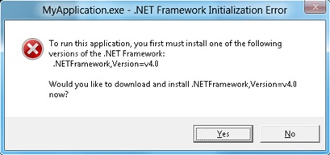

Every .NET app targets a particular .NET version. This is either the target version of the app project, which is automatically recorded with the app, or a version that is manually updated later. When an app is launched, the .NET runtime checks to see if this version is installed on a given machine before running an app. If that version is not installed, you will see an error message similar to the one shown in the image below.

You should validate that the correct version is installed. The Installing the .NET Framework page lists all of versions of the .NET Framework that you an install. You can also look at the .NET SDKs and Targeting Packs page to find the runtime version you need.
You may also want to troubleshoot why you are seeing this error. The .NET team has provided the following resources to help you:
You can contact Microsoft for help if you cannot correctly target the .NET Framework.